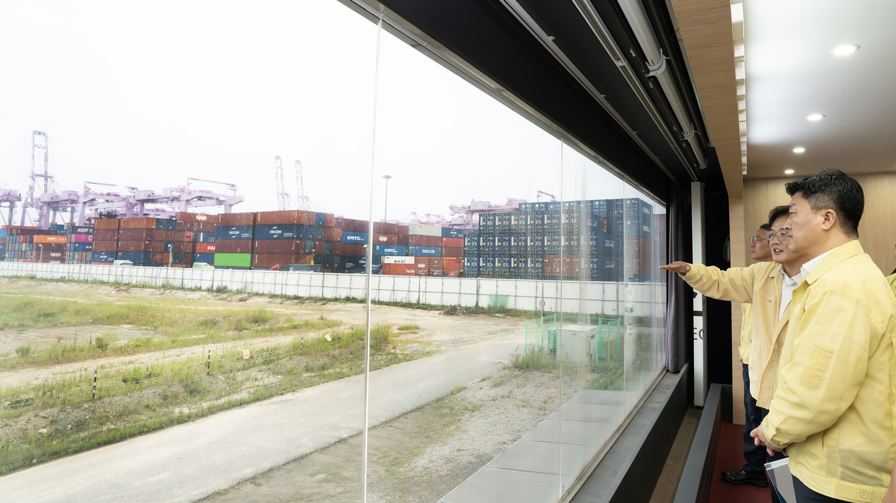
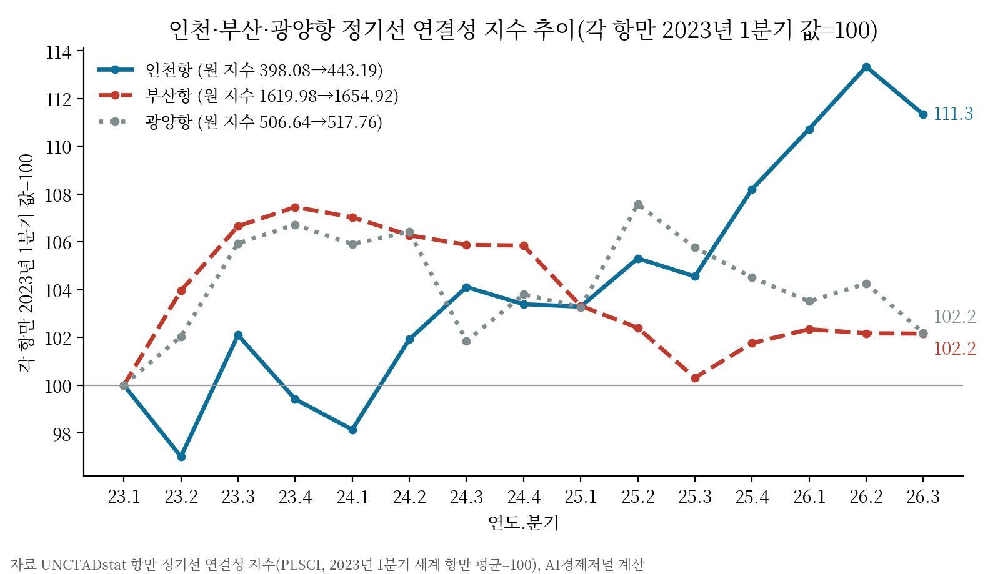

항만 효율과 보상기금·연결성·디지털 인프라, 국내외 연구 넷의 결과
스페인 보상기금 많을수록 큰 비효율, 모형 따라 갈린 연결성 관계
인천항 연결성 지수 11.3% 상승, 부산과 격차 축소
AI경제저널=김갑봉 기자 | 페르난도 곤살레스 락세(Fernando González Laxe) 등 연구진이 스페인 항만청 28곳을 분석했다. 연구진은 항만 사이 보상기금을 많이 받은 항만청일수록 기술효율이 낮았다고 밝혔다.
논문은 『해양정책(Marine Policy)』 192권(2026년 10월)에 실렸다. 이 기사는 여기에 항만 효율·성과에 얽힌 국내외 논문 셋을 더해 넷을 나란히 놓는다. 네 논문은 쓴 자료와 모형이 서로 다르다.
스페인 28개 항만청, 보상기금과 효율
스페인에서는 항만청 28곳이 국가 항만 체계에 속한 항만 46곳을 맡는다. 전년 영업이익이 흑자인 항만청은 그 4~12%를 보상기금에 낸다. 국가항만청(Puertos del Estado)도 따로 돈을 보탠다.
2022년에는 9곳이 내고 19곳이 받았다. 많이 받는 곳 상당수는 섬과 외곽 항만청이다.
연구진은 2018~2021년 재무제표로 확률변경분석(SFA, Stochastic Frontier Analysis)을 한다. 같은 인건비와 고정자산 상각비로 낼 수 있는 최대 매출에 실제 매출이 얼마나 다가섰는지 재는 방법이다.
받은 기금이 많을수록 비효율이 크고, 이 관계는 통계적으로 유의하다. 평균 효율은 2019년 0.84에서 코로나19가 덮친 2020년 0.71로 떨어졌다.
연구진은 기금을 성과와 잇고 효율을 정기 평가하라고 제안했다. 다만 기금을 내는 항만과 받는 섬·외곽 항만은 구조가 달라 결과를 조심해 읽으라고 적었다.
모형 따라 갈린 연결성과 효율 관계
라스팔마스데그란카나리아대 안드레아 로드리게스(Andrea Rodríguez) 등도 스페인 항만청 16곳을 다뤘다. 『해사정책과 경영(Maritime Policy & Management)』이 지난 20일 온라인으로 먼저 실었다.
연구진은 2016~2023년 AIS(Automatic Identification System, 선박자동식별장치) 자료로 연결성을 다섯으로 쪼갠다. 서로 겹치는 선사 수를 빼고 넷을 모형에 넣는다.
모형에 넣은 요소는 기항 수, 이동 수, 공통 직항 연결, 배 한 척 평균 크기다. 배 크기는 20피트 컨테이너 환산 단위(TEU)로 잰다.
연구진은 유엔무역개발회의(UNCTAD) 연결성 지수 같은 합성 지수를 문제로 삼았다. 모든 구성요소가 고르게 성과를 높인다고 암묵적으로 가정한다는 것이다.
표 4의 기본 모형에서 큰 배가 드는 항만일수록 비효율이 낮다. 공통 직항 연결이 많은 항만은 비효율이 높다.
항만 고유 특성을 반영한 모형은 상관 확률효과(CRE, Correlated Random Effects) 모형이다. 이 모형에서는 연결성 네 요소 가운데 유의한 것이 없다. 효율 점수 분산의 57.2%는 항만 사이 차이다.
연구진은 결론에서 이번 결과가 특정 연결성 요소를 늘리면 효율이 반드시 오른다는 근거는 되지 못한다고 밝혔다.
중국 19개 항만, 연결성 상관 0.911
중국 산둥셰허대 장쥔칭(Zhang Jun-Qing)과 중앙대 국제물류학과 우수한(Su-Han Woo)은 중국 주요 항만 19곳을 지표 16개로 줄 세운다.
『해운경제와 물류(Maritime Economics & Logistics)』가 지난 6월 15일 온라인으로 먼저 공개했다. 연구진은 엔트로피 가중 TOPSIS로 순위를 매긴다.
2021년 자료로 보면 상하이·닝보·선전·광저우가 종합 점수 0.4를 넘는 첫 무리다. 종합 순위와 상관이 가장 높은 축은 연결성(0.911)이다.
무게가 가장 큰 지표는 해운망 길목에 놓인 정도를 잰 매개 중심성(betweenness centrality, 19.4%)이다. 이 가중 방식은 항만마다 값이 크게 갈리는 지표에 무게를 준다.
인천항 연결성 지수 11.3% 상승

UNCTAD는 항만 정기선 연결성 지수(PLSCI, Port Liner Shipping Connectivity Index)를 분기마다 낸다.
주간 기항 수, 연간 선복량, 정기 서비스 수, 선사 수, 최대 선박 크기, 직항으로 이어진 항만 수를 묶는다.
기준은 2023년 1분기 세계 항만 평균 100이다. 2023년 1분기부터 2026년 3분기까지 인천항은 398.08에서 443.19로 11.3% 올랐다.
같은 기간 부산항은 1619.98에서 1654.92로 2.2% 올랐다. 광양항도 506.64에서 517.76으로 2.2% 올랐다. 부산항 지수는 2023년 4분기 1740.73이 가장 높았다.
부산항 지수는 인천항의 4.1배에서 3.7배로 좁혀졌다(AI경제저널 계산).

아프리카 23개 항만, 규모별 디지털 인프라
국내 학술지 『한국항만경제학회지』 41권 4호(2025년 12월)에는 아프리카 컨테이너항 23곳 연구가 실렸다. 한국해양대 박사과정 아흐메드 하미두 바(Ahmed Hamidou Ba), 경운대 최성광 조교수, 국립부경대 하명신 교수가 썼다.
연구진은 2022년 처리량으로 항만을 소형 7곳, 중형 8곳, 대형 8곳으로 나눈다. 효율은 자료포락분석(DEA, Data Envelopment Analysis)으로 잰다. 선석 길이·수심·터미널 면적을 들여 처리량을 얼마나 내는지 본다.
대형·중형 항만(각 8곳)에서는 디지털 인프라 지수가 높을수록 효율이 높다. 다만 10% 수준에서만 유의하다. 소형 항만에서는 유의한 관계가 없다. 연구진은 항만 지배구조 변수를 넣지 못했다고 밝혔다.
네 연구의 분석 단위는 16~28곳(스페인 두 연구는 항만청)이다. 자료 기간은 한 해에서 여덟 해다. 세 연구는 표본 수나 빠진 변수를 한계로 적었다. 스페인 보상기금 연구는 짧은 기간과 한 나라 자료를 들었다.
참고문헌
- González Laxe, F., Paz Saavedra, D., and de la Fuente, M.(2026), "Infrastructure compensation funds and port efficiency: Evidence from Spain", Marine Policy, Vol.192, 107189. https://doi.org/10.1016/j.marpol.2026.107189
- Rodríguez, A., Manrique de Lara-Peñate, C., Santana-Padron, A., and Trujillo, L.(2026), "Unpacking maritime container connectivity: individual components and their heterogeneous effects on port technical efficiency analysis", Maritime Policy & Management, Online First(2026.11.20). https://doi.org/10.1080/03088839.2026.2762479
- Zhang, J.-Q., and Woo, S.-H.(2026), "Comprehensive assessment of the performance of major ports in China", Maritime Economics & Logistics, Online First. https://doi.org/10.1057/s41278-026-00361-8
- Ba, A. H., 최성광, 하명신(2025), "Assessing the Relationship Between Port Digital Infrastructure and the Efficiency of African Container Ports: The Moderating Role of Port Size", 『한국항만경제학회지』, 41(4), 17-37. https://doi.org/10.38121/kpea.2025.12.41.4.7
- "Liner shipping: Port connectivity index - Quarterly (analytical)", UNCTADstat, 2026.09.28 갱신. https://unctadstat.unctad.org/datacentre/dataviewer/US.PLSCI
[사진 출처]
- [사진 1·2] 해양수산부 사진뉴스 「남재헌 해수부 차관, 인천신항 현장 점검」(2026년 8월 24일), https://www.mof.go.kr/doc/ko/selectDoc.do?docSeq=68134&menuSeq=381&bbsSeq=15
- [도표 1] 자료 UNCTADstat 「Liner shipping: Port connectivity index - Quarterly (analytical)」, AI경제저널 계산
※ 이 기사는 인공지능기자 위민아이(Wemin_AI)와 협력해 작성했습니다.
관련기사
- 해상풍력과 어업의 공존 조건, 보상·안전 같은 위험 규칙
- [해상풍력 기획④] 설치항만 후보로 꼽힌 인천신항, 인천시는 정비 거점 구상
- [해양 AI 융복합⑭] 항만 자동화 앞 '보호 대책 먼저' 요구한 항운노련과 해외 항만의 생산성 이득 공유
- [해양 AI 융복합⑮] 원격운항자 국가자격 신설 과제와 줄어드는 한국인 선원
저작권자 © AI경제저널 무단전재 및 재배포, AI학습 및 활용 금지